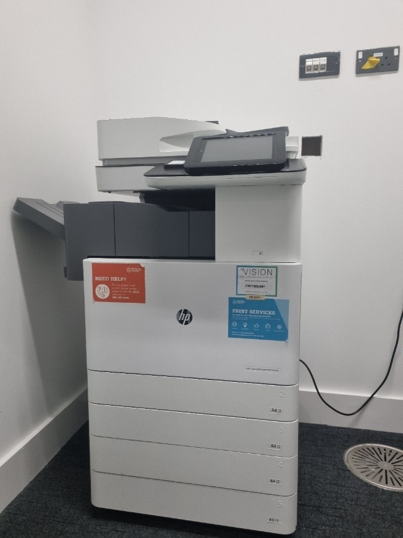
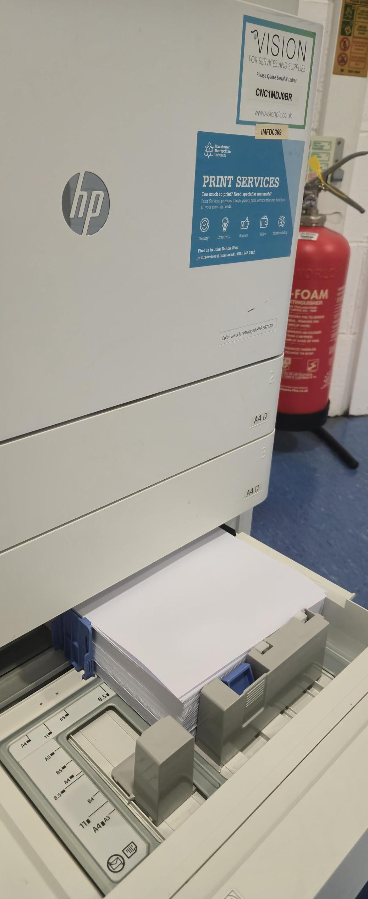

A step-by-step guide on how to refill printer paper:
Step 1: Prepare the Paper
Use the correct paper type and size for printers from the paper storage.Step 2: Open the Paper Tray
Locate the paper tray, usually at the bottom for A3 and top for A4 of the printer.
Gently pull it out until fully extended.
Step 3: Adjust the Paper Guides
Slide the paper guides outward to make space for the new paper stack.
Ensure the guides match the paper size markings inside the tray.
Step 4: Load the Paper
Place the paper stack neatly into the tray, ensuring it's aligned properly.
Avoid overfilling—only fill up to the marked limit to prevent jamming.
Step 5: Adjust and Close the Tray
Slide the paper guides back so they fit snugly against the paper stack.
Push the tray back into the printer firmly but gently.


Any other issues more report to campus